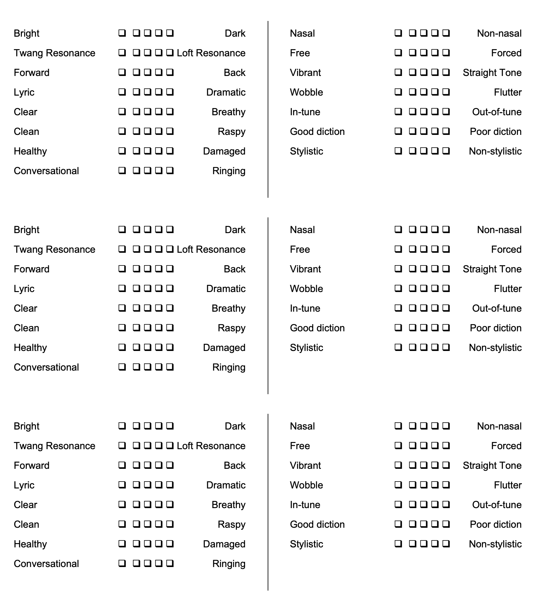

Your Voice: An Inside View 3
Scott McCoy
📚 Содержание
← Предыдущая
Следующая →
Appendix 1: Listening to Singers, Rating Sheet
Appendix 1
Listening to Singers, Rating Sheet

📚 Содержание
← Предыдущая
Следующая →